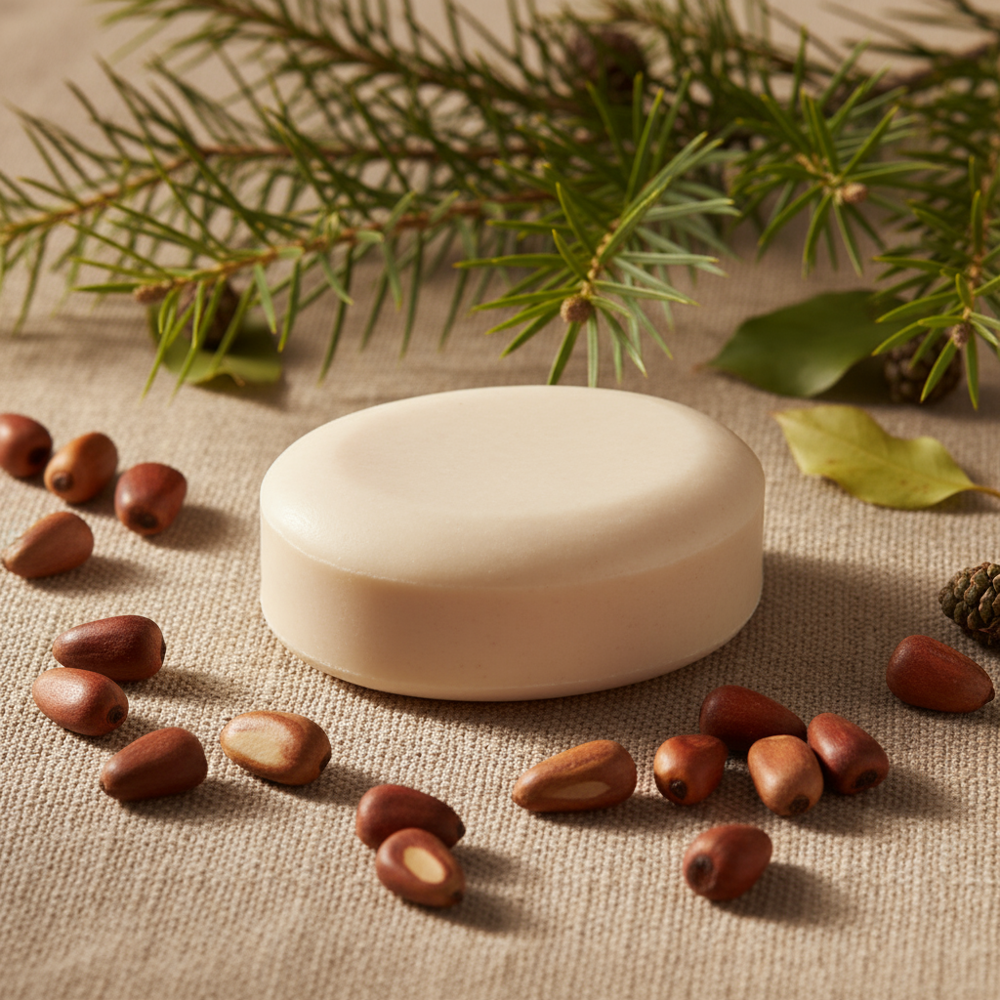

Meus projetos de Iniciação Científica

Lamaduh Ka Hua: Sabonete facial hidratante com extrato da semente da Araucária angustifolia
Este projeto abrange o desenvolvimento de um sabonete que utiliza extrato de pinhão para estimular a retenção de líquidos na face e promover a hidratação, com o auxílio de ativos manipulados em laboratório, como vitaminas A, E e ácido hialurônico.
Sinapses musicais: Funcionamento da música no cérebro como instrumento de aprendizado Artificial
Esse projeto visa explicar como a música é processada no cérebro humano, as reações diferentes provocadas para cada indivíduo e como a músic